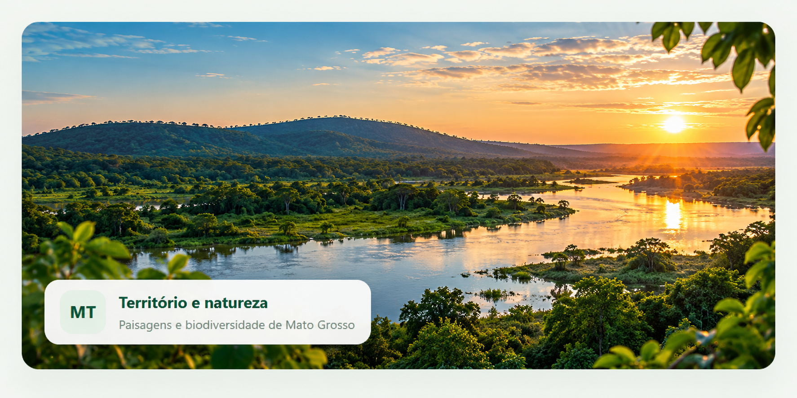

Carregando dados...
Processos monitorados
24Registros fictícios no painel
GESTÃO AMBIENTAL · PAINEL INTERNO
Uma visão demonstrativa de indicadores, processos e atividades para apoiar a organização das informações ambientais.
Protótipo acadêmico. Todos os dados desta página são fictícios e não representam indicadores oficiais da SEMA-MT.

RESUMO EXECUTIVO
ANÁLISE DOS REGISTROS
Distribuição das etapas de acompanhamento
Carregando dados...
Quantidade de registros em cada tema ambiental
Carregando dados...
ACOMPANHAMENTO OPERACIONAL
Lista ilustrativa para demonstrar filtros, busca e atualização de status.
| Processo / atividade | Tema | Responsável fictício | Status | Ação |
|---|
Nenhum registro corresponde à busca ou ao filtro selecionado.
ATENÇÃO
Conferir periodicamente se os dados demonstrativos estão atualizados.
Validar a consistência antes de qualquer divulgação institucional.
Registrar responsável, data e justificativa para alterações reais.
MURAL
Antes de compartilhar indicadores, confira fonte, período de referência, responsável e critérios de cálculo.
Ver registros demonstrativosNão inserir dados pessoais, informações sigilosas ou dados operacionais reais nesta demonstração.